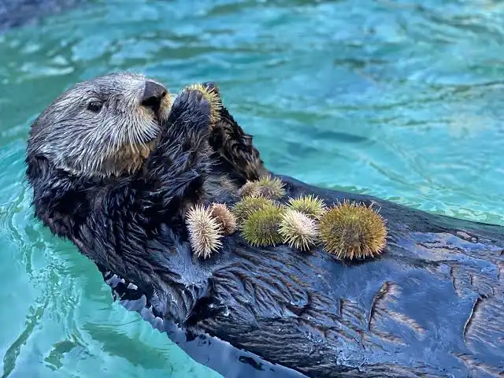

Sea Otter
Threatened
Estimated remaining: ~3,000 (Southern population)
Habitat
Coastal waters of the North Pacific, from California to Alaska and Russia.
Threats
- Oil spills
- Shark predation
- Climate change and kelp loss
- Pollution and harmful algal blooms
Conservation efforts
Marine protected areas, rehabilitation programs, and legal protections under the Endangered Species Act.